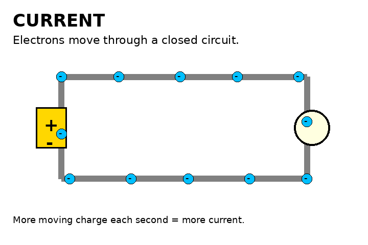

Matter
Properties of matter; solids, liquids, and gases; changes of state; particle-model introduction.
Build strong foundations through observation, models, and everyday examples.

Properties of matter; solids, liquids, and gases; changes of state; particle-model introduction.

Forces acting on structures; loads; strength and stability; simple machines and mechanical advantage concepts.

Forms of energy, energy transfer, conservation ideas, and an introduction to electrical energy and circuits.

Human organ systems and how body systems work together.
Conservation of energy and resources; connections between human choices and the environment.